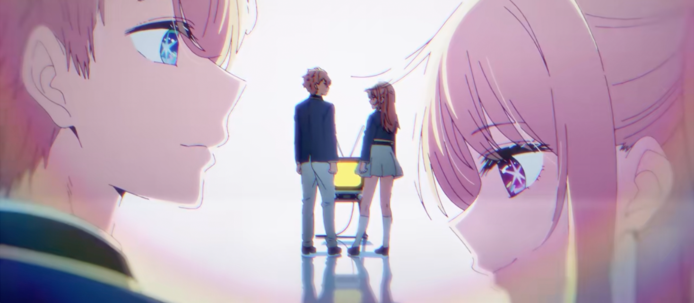
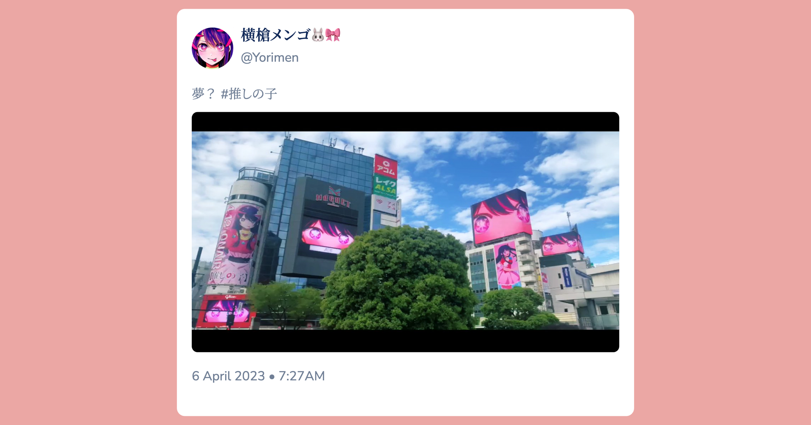
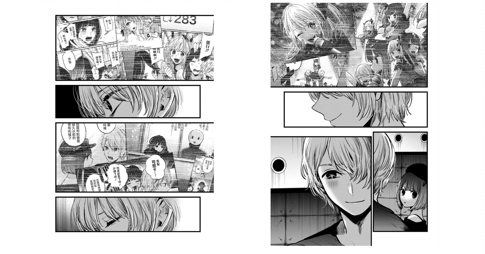
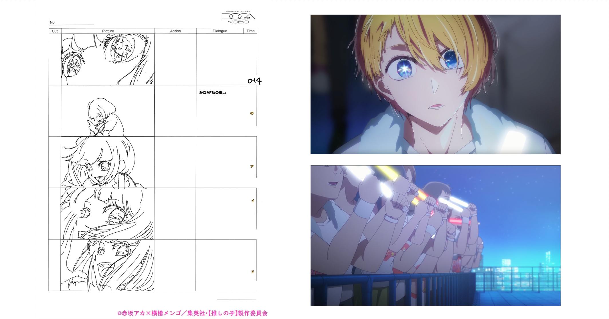
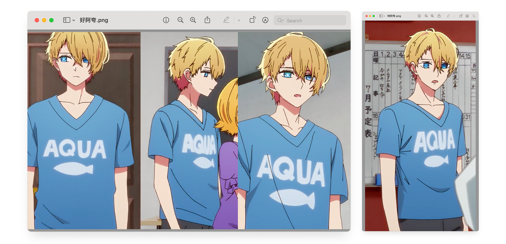
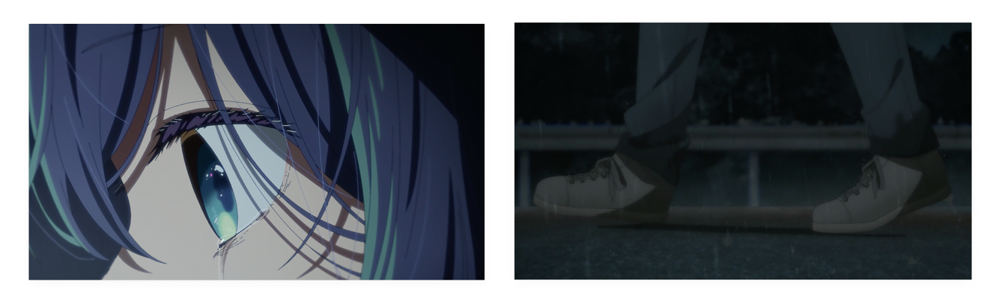
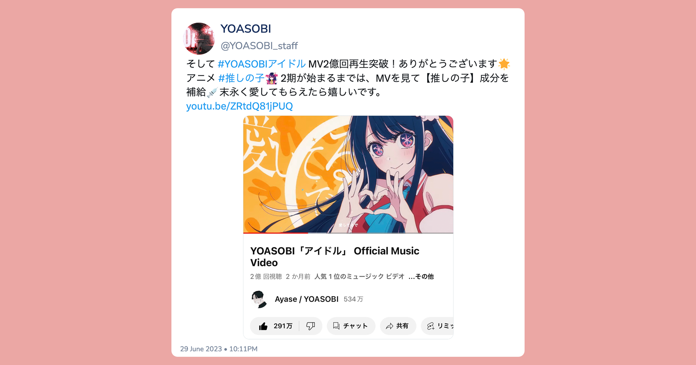
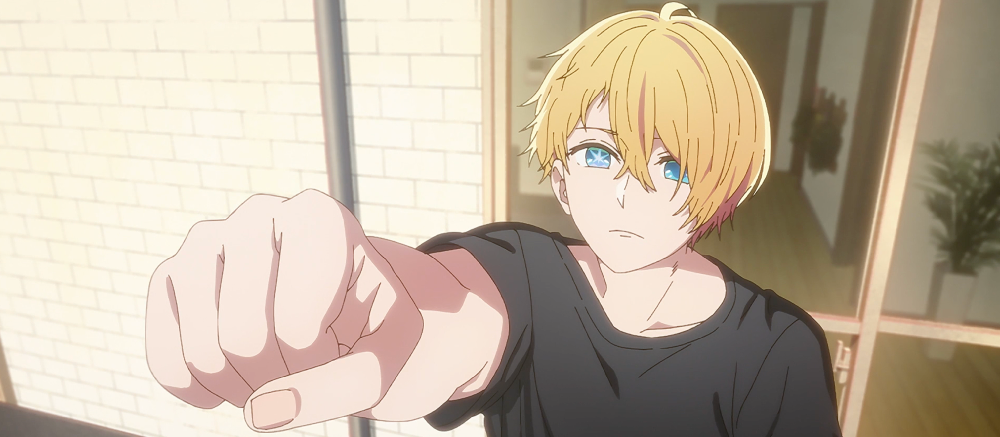

いついつまでも憧れ、焦がれているよ。
无论何时，满怀憧憬，殷切期许。🎵 メフィスト (Mephisto) - 女王蜂 (じょおうばち)
莫不如说在观看这部作品的历程中，某种难以言明的「Drama 感」就一直萦绕在我的心头，这部作品已经跳脱了我评价日本动画作品的逻辑框架，达到了我在摩挲藤本树加中山龙的时候都未曾企及过的那种心灵的震撼……
但这只是假象，一切的原因都是由于这部作品的「舞台」。看似标准的「戏剧」盘旋在我的心里，过多的要素让我难以自理，认知脱节会造成很严重的问题，我就不应该对它有着什么所谓「基本的期许」。
最终，大家都放下了，大家都。
我们来谈谈吧。
我最大的意外，应该是这部作品的第一季只有 11 话就完结了。
其实也没什么意外的，毕竟刚完结就官宣第二季了。但就作品给我的「第一印象」而言，11 话就完结确实不在我的预期之内。集英社给予了漫改相当的重视，从天空到地底，第 1 话放送那些天的涩谷周边（这里也是剧情中的重要舞台）已经完全变成了《推子》的模样。

无论是被广告轰炸引流至此，还是被 YOASOBI 吸引至此，我相信大部分朋友和我一样，都是被「重置三观」的第 1 话震撼而彻底坠入这场名为《推しの子》的盛宴当中。按照剧场版的制作标准，总共 1 小时的特别专辑带着极富冲击感和剧情张力的剧情一环接一环，YOASOBI 带着些骨骼清奇里透着些古灵精怪、意韵多元但饱含阴阳怪气的《アイドル》就像是泼在红烧鱼上的最后一勺热油，酣畅淋漓、意蕴深远、回味无穷。不得不承认，我属实被冲击到了，这是我这么多年的看番生涯以来，排的上号的「摇撼人心」。无须讳言，我看完第 1 话的反应 早已明了。
但是思考永远于冲动后产生。作为一部依靠「爱」与「欺骗」支撑的转生类复仇流作品，需要持续不断的「剧情烈度」支撑作品的后续进展，不然极易陷入平庸。通过如此大量的「要素堆砌」烘托情绪到绝对高点的《推子》要如何承接这份「超重的期待」，且日常向单元剧之于如此「强劲」的背景的展开如何符合作品的内核，以我个人的设想很难给出两全的回答。佳作之于《紫罗兰永恒花园》（我承认，我是京蜜我投降），通过设定和画面在第一集构建的绚烂观感紧接着在后三集就渐入朴实，日常向也不免出现剧情枯燥、难以共情的议论。我无法解释这份疑问，于是我赶忙去 B 漫追更了漫画。
大赤老师向我证明了他的「实力」，他知道如何选择弹幕最多的那条路。

诚如我在之前所述的那样，讨巧地选择了「演艺圈」这个日常接触但是又无比陌生的领域，讨巧地选择了「转生」这个轻小说界超火超烂的特性但是却是现世甚至熟人的环境，讨巧地选择了「现世报」这个日本文化传统但是又无比脱离现世的背景，提供了优秀的日常向延伸空间，带有现实但是却脱离现实。只不过，一部依靠「爱」与「欺骗」支撑的转生类复仇流作品不适合通过「日常向展开」成为一部大长篇，叙事头重脚轻的隐忧倍增，故事烈度会随着时间推移和剧情演化出现剧烈的劣化，直到所有角色的行为都变得像是一个「小丑」，剧情迈向不可避免的崩坏。
大赤老师在作品的开头贡献了纯粹的「痴狂」，最终将作品推向了纯粹的「臆想」。我未曾想到过，有一天我会和朋友在某处聊到他作品的「剧情烈度」。
当前方没有路的时候，直接破罐子破摔或许是更好的选择。
别为我担心，我还没有那么悲观。或许吧。
借这个机会来谈谈第 11 集吧。它收尾得有些匆忙，但不坏。B 小町的首次舞台公演是这一集前半段的核心，交代阿奎亚与诸多重要女性角色的关系（尤其是和有马佳奈）是后半段的核心。如何回答「偶像」这一问题是赤坂明拯救自己的线索中观者好感度最高的一条，毕竟这条线索逃脱了设定，是真正的关于「偶像」的问题。只可惜没有人能够在这故事里拯救自己（即使是赤坂明也不行），我们只能守望她们这一瞬的光芒。

守望她们这一瞬的光芒，也不坏啊。
2D 舞台制作组用了心（但是依旧泛泛），有马的内心独白堆叠成长感，阿奎亚的 ヲタ芸 依旧有趣但是并没有第 1 话出色，是一个明显的 call back。后半的对话略有些草率且匆忙，黑川和有马斗争重启（但是依旧泛泛），当然作为原著党还是希望阿夸和有马的互动能更加戏剧化且显性。这一集的伏笔回收和剧情推进处理得相对克制，只不过就这部作品的第 1 季的终章来说有些过于「平淡且温柔」了。
还是那句话，它收尾得有些匆忙，但不坏。
光是在「指摘」大赤老师或许不妥，但相对而言，动画工房也没能向我证明他的实力。
集英社向我证明了它的实力，《推子》看成动画圈的顶级营销案例，YOASOBI 的《アイドル》也实现了难以想象的成功。但是似乎动画工房真的不太适合类似这样的作品。
我一次又一次地陷入沉默，观感不加有着制作的一口锅。动画工房承接芳文社的作品应该是众多动画迷心中的「白月光」，面对推子这部有着较为恒定模板的「命题作文」总不该出什么幺蛾子，只可惜…… 正如京都动画之于《紫罗兰永恒花园》，动画工房之于《推子》并没有对剧情如此重要的影响力，局限于作品本身成为了观感的重大桎梏。重要的是，这画风绝对不动画工房，作品质量就够我发出疑问了。

这部作品是带了些「魔怔感」的，这或许是新世代日本漫画家的共有特征（我真的不是在说藤本树）。但在《推子》漫改中，这些「矜持」成为了影响观感的重要推手。能明显感受到脚本和分镜的「小心翼翼」，仅仅用单调的镜头确实让我有些失望，镜头演出选择的角度和拍法上总让人觉得平庸。我觉得和监督不无关系。可能还是动画工房和芳文社在一起久了，「小甜番」做多了，这种稍微带一些「疯癫」特征的作品就有些超出监督的掌握了。
上文中我不止一次强调了作品的「泛泛」与「平淡」。作画质量下滑这点确实让我有些意外。制作除了在一些名场面加了些花活之外，其余分镜基本上都照搬了漫画，不管是剧情甚至是分镜。我追评时不止一次强调「这一话基本是对原作漫画分镜的『忠实再现』」。第 2 话时我还是觉得是分镜照搬原作的问题，第 3 话的时候我觉得分镜表现力出了大问题，第 4 话原画就开始崩了，到了第 5 话我差不多就夸不出来了，到了第 6 话我就要为制作组的表现找理由了…… 或许动画组拿到推子的委托也挺头疼的，最终选择打响第一枪 —— 将全部的本钱赌在第 1 话上。纵使如此而言，就《推子》番剧本身来讲，看完 11 话的我仍旧评价说目前的表现只是觉得和第 1 话差距较大。虽然这和稳扎稳打复刻漫画分镜不无关系，但是监督应该可以处理得更加巧妙。我曾经探讨过漫画、小说和动画由于「媒介不同」而产生的体验以及叙述逻辑上的显著差异，这应该要引起显著反思。
纵使一直在强调「剧情烈度」，但番剧后期难言烈度，烈度全在评论区和弹幕里。

虽然番剧后期出现了算不上出色但是可以称之为优秀的「低气压」营造，提供了相当充足的表现张力，也不像前几集拘泥于漫画原本，可以说终于用上了媒介的力量，做出了自己的风格。但这本该是动画工房从第二集开始就带给我的观感，它来得太晚了。第 9 话回到了平牧大辅监督的舒适区。和芳文社在一起久了，动画工房知道如何在平常中去营造那种似有似无的空气感，《推子》的这一话的虽表现的并不明显，但确实难得观感回归的一话。只可惜这种类似的观感完全无法做到可持续。站在这个角度，我很难期待第二季舞台篇的漫改能达到如何的高度。
在第 6 话时，我谈到了《世界尽头与冷酷仙境》。《推子》其实具有村上作品的一个特质：「要做什么事，试图去做了什么事，达成了什么事，但是什么事也没达成」的世界系混沌逻辑，一个 do 与 undo 的矛盾。虽然能看出监督和脚本非常努力地通过节奏和转场去营造氛围，但是无奈能力和条件有限只能叹息，「不再为了所谓的满足而徒劳」，努力让故事回归故事，番剧反倒是变成了蒙太奇的艺术。
我第一次听到《アイドル》的时候，想着的是「亚夜世，你曲风里又添新瓜了」。
事实证明，Ayase 确实在不断地朝着自己的未来迈进，他确实比我先读懂这部作品。《アイドル》成为了我理解与「凭依」星野爱，生发并感受整部作品伏笔与情感的一把钥匙。

只不过，作为一部依靠「爱」与「欺骗」支撑的转生类复仇流作品，《俄狄浦斯》式的剧情烈度一次又一次地为日常向和漫才向让路。赤坂完全没想好应该如何回答这个问题，他甚至已经丧失了如何平衡天平两端的力度，在赋予这部作品「张力」的同时拥抱这部作品的「深度」。 加之下滑明显的动画工房，最终零落成一地浆糊。
你在桥上看风景，看风景的人在楼上看你。
明月装饰了你的窗子，你装饰了别人的梦。卞之琳 - 断章
主线演进被日常拖累，剧情崩坏功夫全白费，写实背景神明来垫背。
最终还是回到了我在第 1 话时发出的呐喊。
我们需要妥善处理自己的预期。
任時光荏苒，男孩已然
一身絕活，而盲目信賴

不知为何，结尾的一个片段一直萦绕在我心中。男孩向天空伸出的那只手，我更希望它是某种单纯的希望，而不是别的什么东西。无论这故事最终会走向何处（至少我们已经知道了大赤老师终究还是抵达了他忠诚的柏林……），我希望男孩铭记，他的母亲给予他的那份期许，并带着那份期许夸耀着活下去。
「流れる汗も綺麗なアクア」
流淌着的汗水也如蓝（ア）宝（ク）石（ア）一般美丽
「ルビーを隠したこの瞼」
眼帘下的瞳孔也如红（ル）宝（ビ）石（ー）一般闪亮
她是天才偶像星野爱，她从未离开那座舞台，她从始至终闪耀着光芒。
她离开了，她从未离开。
她爱你们。